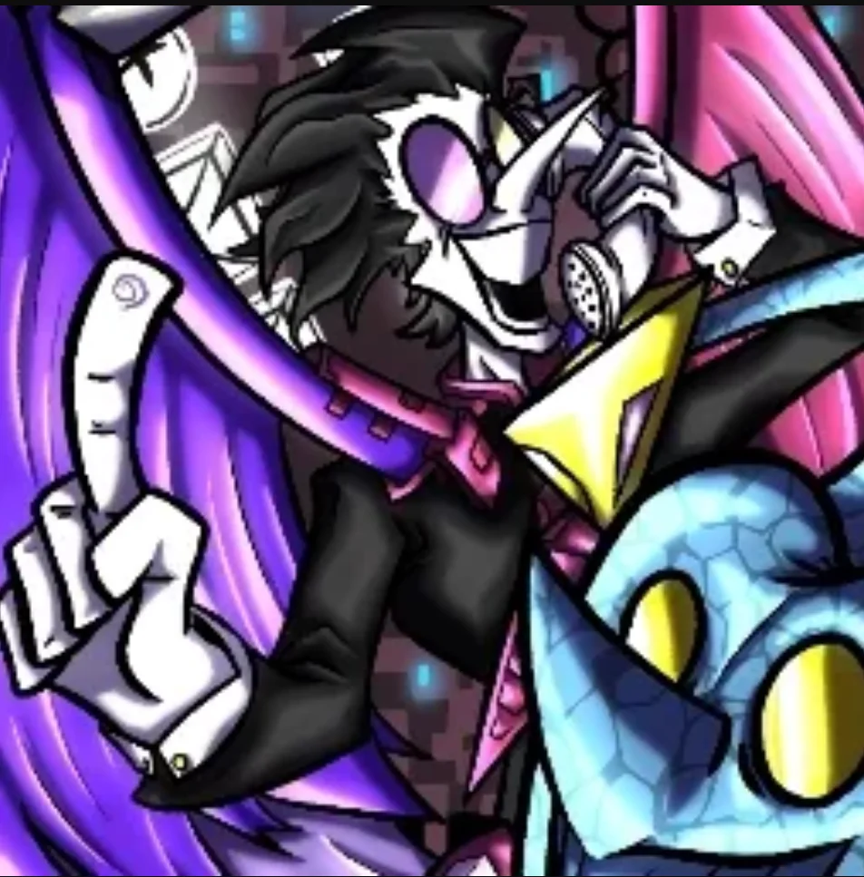
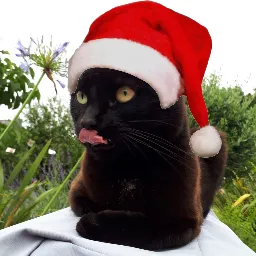
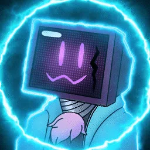
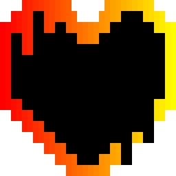
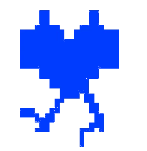
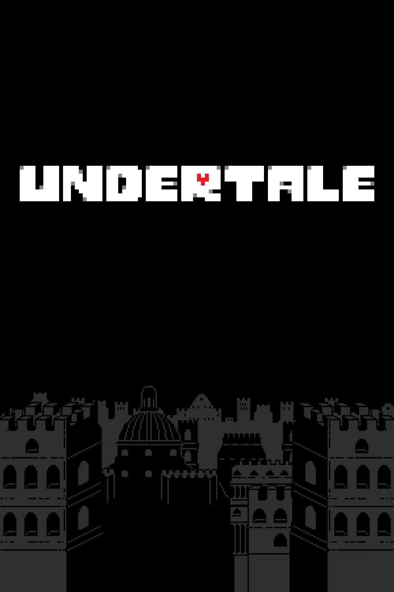

L'Équipe du Projet
Développeurs, traducteurs et contributeurs bénévoles ayant coordonné et réalisé les adaptations françaises complètes pour Undertale Yellow et Undertale Red & Yellow.

Arvix
Direction & Traduction LittéraireTraduction intégrale des 9 865 répliques et dialogues d'Undertale Yellow, adaptation soignée des jeux de mots et du ton authentique de l'Outremonde.

Anthan
Traducteur Principal & Adaptation FrançaiseTraduction et adaptation intégrale d'Undertale Red & Yellow en langue française. Localisation exclusive des interactions inédites entre Clover et Chara et respect des codes narratifs originaux.

Cronos
Architecture Technique, Patcheurs & PackagingDéveloppement du patcheur autonome multi-plateforme en Rust, portail web, rétro-ingénierie du bytecode GameMaker et packaging natif Linux / Steam Deck.

Shinix
Créateur du Fangame Red & YellowConcepteur et développeur du mod de continuité Red & Yellow. Intégration synchronisée de Clover et Chara, programmation des combats hybrides et équilibrage.
Team UTY & Master Sword
Créateurs d'Undertale YellowDéveloppement du fangame préquelle pendant 7 années de travail, composition des 135 pistes musicales originales et création des nouvelles zones.

Équipe Undertale FR (2016)
Glossaire Canonique de RéférenceTraduction française originelle du jeu Undertale, dont le travail historique sur le lexique canonique sert de référence fondamentale.

Toby Fox & Temmie Chang
Auteurs du Jeu Original UndertaleCréateurs du chef-d'œuvre originel Undertale sans lequel aucun de ces projets communautaires n'aurait vu le jour.